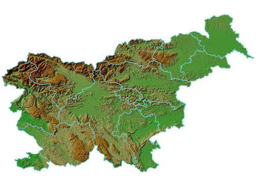
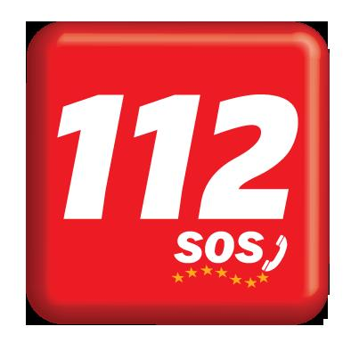

112 – klic v sili: Center za obveščanje
Klic v sili na telefonsko številko 112 je brezplačen. Na voljo je 24 ur dnevno, 365 dni v letu. Vsak občan, ki opazi nesrečo, ki je prisotni na mestu dogodka ne morejo obvladati, je dolžan poklicati pomoč na številko 112. Občani tvorijo največje opazovalno omrežje in centrom za obveščanje sporočajo podatke o naravnih in drugih nesrečah oziroma o dogodkih, kjer je potrebno posredovanje različnih reševalnih ali javnih služb. Centri za obveščanje spremljajo tudi določene aplikacije za monitoring, kot je vodostaj rek, pridobivajo podatke od policije ter javnih zavodov in služb. Slovenija je enotno evropsko številko za klic v sili uvedla leta 1997. Številko 112 lahko pokličete v vseh državah članicah EU in v nekaterih drugih državah.
V Sloveniji klice v sili na številko 112 sprejema trinajst regijskih centrov za obveščanje: Brežice, Celje, Koper, Kranj, Ljubljana, Maribor, Murska Sobota, Nova Gorica, Novo Mesto, Postojna, Ptuj, Slovenj Gradec, Trbovlje.

Klic v sili se lahko opravi na tri načine:
- z glasovnim klicem na številko 112
- s kratkim tekstovnim sporočilom (SMS) v omrežju mobilne telefonije
- tekstovno preko portala wap.sos112.si (namenjeno predvsem gluhim in naglušnim)

Ob klicu na številko 112 povejte:
- KDO kliče
- KAJ se je zgodilo
- KJE se je zgodilo
- KDAJ se je zgodilo
- KOLIKO je ponesrečencev
- Kakšne so POŠKODBE
- Kakšne so OKOLIŠČINE na mestu nesreče (požar, nevarne snovi, poškodovane plinovodne ali druge napeljave ...)
- Čigavo POMOČ potrebujete
Z rdečo barvo označeno besedilo je najpomembnejši podatek za operaterja. Brez teh podatkov na kraj nesreče ni mogoče napotiti reševalnih služb.
Številko 112 pokličite:
1. če potrebujete nujno medicinsko pomoč, pomoč gasilcev, nujno veterinarsko pomoč, pomoč gorskih, jamarskih reševalcev, drugih reševalnih enot ali policije
2. če opazite, da gori, se izteka nevarna snov, da so onesnaženi pitna voda, potok, reka ali morje, da grozi zemeljski ali snežni plaz, da so pretrgane električne ali telefonske žice, ali če opazite druge pojave, ki predstavljajo nevarnost za življenje ali zdravje ljudi in živali ali za varnost premoženja, kulturne dediščine in okolja
3. če ob nesreči ali povečani nevarnosti naravne ali druge nesreče potrebujete informacije o motnjah pri preskrbi s pitno vodo, električno energijo ali plinom, o motnjah v telefonskem omrežju in o stanju snežne odeje v visokogorju
Ob klicu na številko 112 operater v centru za obveščanje samodejno pridobi podatke o telefonski številki in mestu prijavitelja. V geografsko-informacijskem sistemu se prikaže kraj prijavitelja tako za stacionarno kot mobilno telefonijo. Medtem ko je natančnost za stacionarno telefonijo popolna, je za prikaz mesta uporabnika mobilne telefonije natančnost odvisna od števila baznih postaj oziroma katero območje bazna postaja, na katero je prijavljen mobilni telefon, zajema.
Z lociranjem prijavitelja in s podatki o nesreči operater lahko začne aktiviranje in obveščanje.
Če potrebujete nujno medicinsko pomoč, operater prijavitelja preveže k pristojni reševalni postaji ali ekipi nujne medicinske pomoči v zdravstvenem domu. Na območju posameznega centra za obveščanje deluje več zdravstvenih domov oziroma reševalnih postaj, zato mora operater od prijavitelja nujno pridobiti podatek o lokaciji in ga prevezati naprej. Reševalci tako dobijo že filtriran klic, ki je namenjen skupini reševalcev, ki jih dejansko potrebujete. Med centri za obveščanje in reševalci se uporabljajo posebne telefonske linije, ki klic povežejo na višji nivo kakovosti.
Nujni klici na številko 112 za policijo so vedno prevezani preko posebne telefonske linije v operativno-komunikacijski center pristojne policijske uprave. Če ne gre za nujni klic, je kličoči napoten, da pokliče številko slovenske policije 113.
V vsaki občini je župan odgovoren za požarno varnost, zato skupaj z gasilsko službo pripravi in podpiše načrt aktiviranja gasilskih enot. Zaradi specifik posameznih občin se načrti med seboj razlikujejo, zato mora operater poznati postopke aktiviranja enot. V nekaterih primerih, predvsem kadar javno gasilsko službo upravljajo večje poklicne enote, lahko operater klic preveže k dežurnemu gasilcu, telefonistu, ki po ozvočenju aktivira svoje poklicne kolege. V Sloveniji je večina gasilskih enot prostovoljnih. Te večinoma nimajo človeka, ki bi bil neprestano prisoten v gasilskem domu, zato podatke o požaru oziroma drugi nesreči zapiše operater v centru in enoto aktivira s pozivniki. Gasilci so v center dolžni sporočiti izvoz, prihod na kraj in situacijo na mestu dogodka, se v dalj časa trajajoči intervenciji večkrat javiti, sporočiti svoj odhod s kraja in prihod nazaj v gasilski dom. Ob vrnitvi gasilci v centru za obveščanje opravijo končno poročanje, praviloma preko javnega telefonskega omrežja. Preostala komunikacija po večini poteka preko profesionalnih radijskih UKV-zvez sistema ZARE.
Podoben način aktiviranja in komunikacije s centrom za obveščanje velja tudi za druge prostovoljne reševalne službe, kot so gorski reševalci, jamarji, potapljači, skupine za iskanje pogrešanih ipd.
Večji centri za obveščanje prejmejo v povprečju 500 klicev v 24 urah. Ob dogodkih večjega obsega, kot so poplave, neurja ipd., se število klicev znatno poveča. Med poplavami v Ljubljani je denimo ljubljanski center za obveščanje v treh dneh zapisal okoli 17.000 klicev. Vsi klici na številko 112 se snemajo in hranijo šest mesecev. Zloraba klica na 112 ter znamenj za pomoč in nevarnost je kazniva.
Javnost je o delu centrov za obveščanje oziroma o posredovanju reševalnih služb obveščena po:
- teletekstu RTV Slovenija na strani 198, kjer se dnevno objavlja poročilo o dogodkih preteklega dne
- facebookovi strani http://www.facebook.com/urs.zr?fref=ts, kjer se objavljajo pomembnejši dogodki in tudi različna obvestila o aktivnostih Uprave RS za zaščito in reševanje
- spletni strani Uprave RS za zaščito in reševanje: www.sos112.si
- grafičnem prikazu trenutnih dogodkov http://spin.sos112.si/SPIN2/Javno/, ki je dostopen na spletni strani Uprave RS za zaščito in reševanje. Na zemljevidu Slovenije se ob odprtju poročila v centru za obveščanje izrišeta ikona in kratek opis dogodka. Ikona v obliki modrega telefona pomeni, da gre za nepreverjeno informacijo o dogodku oziroma začetek posredovanja. Ko se dogodek zaključi, se na zemljevidu izriše ikona, ki predstavlja posamezno vrsto nesreče glede na šifrant dogodkov. Obiskovalec grafičnega prikaza si lahko uredi tudi časovno obdobje za prikaz dogodkov v razmiku nekaj ur preteklega dne.